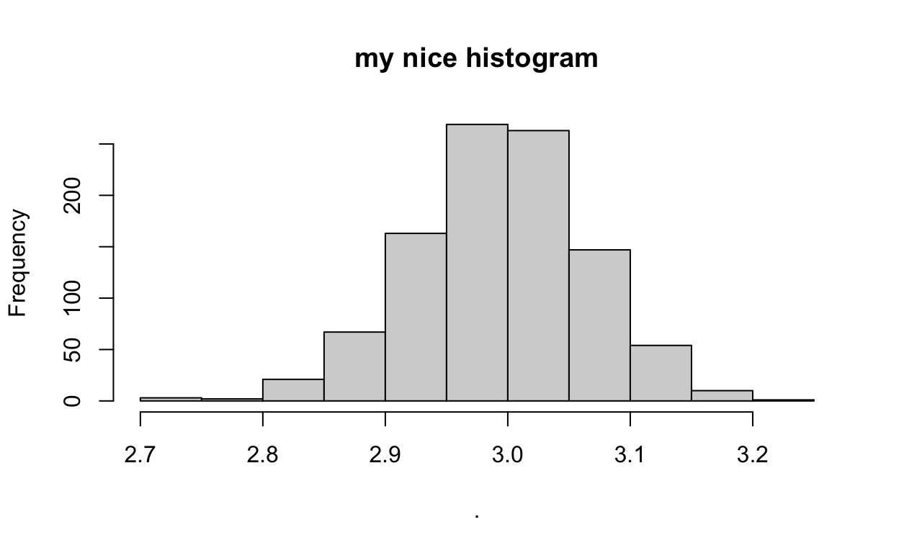
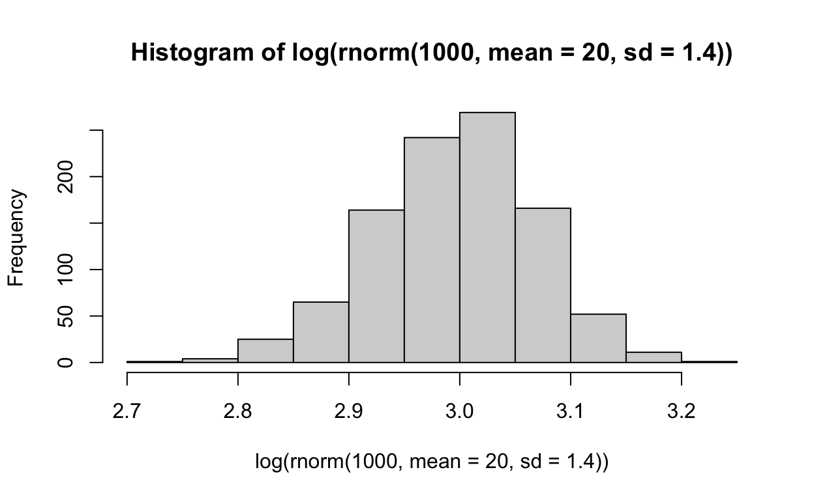

the tidyverse
tidyverse is a series of R packages that has revolutionized working with data in R.
It provides a consistent and simple interface to do common data manipulation tasks
the dplyr package
dplyr is a package within the tidyverse for manipulating dataframes. It is very consistent.
dplyr assumes that you are starting with a dataframe, doing something to that dataframe, and finishing with a different dataframe.
Many of the base R functions operate on atomic vectors, which makes it more complicated to apply them to dataframes.
dplyr introduces a series of simple ‘verbs’ that describe many common data manipulation tasks.
Read dataset
We will be using a dataset on student loans in public and private universities.
We can read it in using read.table() DMV_2014_Q3_Undergrad_DirectLoans.txt and save it to a variable called loans.
loans<-read.table('https://stats.are-awesome.com/datasets/DMV_2014_Q3_Undergrad_DirectLoans.txt', header=T, sep=",")The basic dplyr verbs
There are a few basic functions in dplyr
The first argument to these functions is always the dataframe that you want to manipulate.
Within these function calls, you can refer to the names of columns in the dataframe without quotation marks and without the usual $ syntax.
Here, we first load the dplyr package to get access to these functions, which are not available in R by default (they live in the dplyr package). If you don’t want to load all the functions in a particular libary, you can refer to them like this packageName::functionName, but most commonly you will load the entire package.
library(dplyr)filter()
This function selects a subset of rows meeting some criterion. Note that the result is a dataframe.
filter(loans, School=="GEORGE WASHINGTON UNIVERSITY")Note, you can add multiple filter conditions. You will get back all the rows for which all the conditions are TRUE. For example, this code gives you all the public universities in DC.
filter(loans, State=="DC", School_Type=="Public")Challenge
Use the dplyr::filter() function to get the data for “AMERICAN UNIVERSITY”.
Double bonus challenge
Use the dplyr::filter() function to get the data for GEORGE WASHINGTON UNIVERSITY and GALLAUDET UNIVERSITY in a single line of code. Hint: use the %in% operator instead of the == operator to pass a vector of possible school names.
arrange()
This function is like the “sort” function in MS Excel. You simply provide a list of column names to sort by:
arrange(loans, State, SubsidizedDL)arrange(loans, State, desc(SubsidizedDL))select()
This function pulls out columns of interest. You can select ranges of columns using the : operator syntax. (Note: usually this only works with numeric data, but this is a special usage defined in the dplyr package)
select(loans, State, SubsidizedDL)select(loans, -State, -SubsidizedDL)select(loans, State:SubsidizedDL)distinct()
This function extracts the distinct rows. It is most useful when combined with select
distinct(loans)distinct(select(loans, State, School_Type))mutate()
Adds new columns that are some function of existing columns
mutate(loans, Total_Loans = SubsidizedDL + UNSubsidizedDL)rowwise()
Mutate works as expected when you want to manipulate whole columns at once, but sometimes you want to do something on a row-by-row basis.
For example: this code doesn’t work as you might expect
myDF <- data.frame(x=c(1,2,3), y=c(10, 11, 12))
mutate(myDF, sum=sum(x, y))rowwise()
But this code computes the sum on a row-by-row basis, as you might expect
myDF <- data.frame(x=c(1,2,3), y=c(10, 11, 12))
mutate(rowwise(myDF), sum=sum(x, y))summarise()
Summarizes data into a single row. This may seem not that useful, but it will become useful when we start grouping data.
summarise(loans, meanSubDL = mean(SubsidizedDL, na.rm=TRUE))Grouping Data
These functions above get really powerful when you start grouping data based on factors in your dataset.
##group_by()
groupedLoans <- group_by(loans, State)
summarise(groupedLoans, meanSubDL = mean(SubsidizedDL, na.rm=TRUE))## `summarise()` ungrouping output (override with `.groups` argument)Chaining operations
dplyr also provides a way of chaining together complicated operations with the %>% operator.
This prevents having to save intermediate steps, or to have a complicated series of nested functions.
Which is easier to read?
Option 1
wakeUp() %>%
getOutOfBed() %>%
eatBreafast()
leaveHouse()Option 2
leaveHouse(eatBreakfast(getOutOfBed(wakeUp())))Chaining operations
Note that the resulting dataframe from each step is passed as the first argument to the next function in the chain.
myResult <-
group_by(loans, School_Type) %>%
mutate(Total_Loans = SubsidizedDL + UNSubsidizedDL) %>%
select(-State) %>%
summarise(mean_total_loans = mean(Total_Loans, na.rm=TRUE))## `summarise()` ungrouping output (override with `.groups` argument)myResultIn this example we haven’t saved all the intermediate steps, so we don’t have leftover dataframes floating ariound that are missing the State column. In the end, all we have is the myResult dataframe we saved
Chaining works with non-dplyr() functions too
#chained syntax
rnorm(1000, mean=20, sd=1.4) %>% log %>% hist(main="my nice histogram")
#compare with nested function calls
hist(log(rnorm(1000, mean=20, sd=1.4)))
do()
do anything to grouped data
linearModels <- loans %>% group_by(State) %>%
do(regression=lm(UNSubsidizedDL~SubsidizedDL, data=.))
linearModelsdo()
linearModels <- loans %>% group_by(State) %>% do(regression=lm(UNSubsidizedDL~SubsidizedDL, data=.)) linearModels
linearModels %>%
summarize(sum=summary(regression)$r.squared)## `summarise()` ungrouping output (override with `.groups` argument)Challenge
Using the diamonds dataset that is built in to the ggplot2 package:
- calculate the mean price of diamonds for each of the different clarity ratings
- create a new column called
volumethat is the product of x, y and z - plot
volumeagainstcarat
More info
A more complete introduction is available in the dplyr vignette
More info on magrittr can be found here.
TAKE A BREAK
Prgramming in R
R is a programming language, which means that it gives you all the tools you need to automate repetitive tasks. There are three (or more) main ways to do this:
forloops- the
lapply()function - the
dplyrpackage
for loops
for loops will be familiar if you have ever used any other programming languages. The basic structure looks like this:
vector <- 1:10
for(i in vector){
#do something with i
}for loops
Here is a (slightly) more complicated example.
myVector <- 1:10
for(counter in myVector){
result <- paste("counter ^ 2 = ", counter^2)
print(result)
}## [1] "counter ^ 2 = 1"
## [1] "counter ^ 2 = 4"
## [1] "counter ^ 2 = 9"
## [1] "counter ^ 2 = 16"
## [1] "counter ^ 2 = 25"
## [1] "counter ^ 2 = 36"
## [1] "counter ^ 2 = 49"
## [1] "counter ^ 2 = 64"
## [1] "counter ^ 2 = 81"
## [1] "counter ^ 2 = 100"explanation of previous loop
We loop over a vector
1:100, and sequentially assign its values to a temporary variable we are callingcounter. (Note: we can call this variable whatever we want.)Then R does what is within the curly braces
{}for each iteration of the loop.In this case, it pastes together some text with the square of the value of
counterand prints this all to the console.After running the above code, what is the value of
counter? What is the value ofmyVector? Has this value changed?
getting stuff out of a loop
- Create a results vector in advance that is the same length as the vector we are looping over
- Then save the results each time in the appropriate slot.
myVector <- runif(5, min = 1, max=10); myVector## [1] 5.185321 8.961673 5.504295 5.146551 1.543464results <- numeric(5)
for(each in 1:length(myVector)){
results[each] <- paste(myVector[each], "^ 2 = ", myVector[each]^2)
}
results[3]## [1] "5.50429494585842 ^ 2 = 30.2972628510025"if statements
- Often during a loop, you may want to do a test and do something different based on the results of the test.
- Imagine a vector of germination outcomes from a seed experiment.
- 0 indicates the seed did not germinate due to insect predatoin
- 1 indicates that it did not germinate but no insect predation occurrend
- 2 indicates that the seed germinated.
We can use the if() function to evaluate the outcome and provide context specific output.
outcomes <- c(0,1,0,2,0,1,0,2,0,1,0,1,0,0)
for(trial in outcomes){
if(trial == 2) print("Welcome to the world, plantling!")
else print("RIP")
}## [1] "RIP"
## [1] "RIP"
## [1] "RIP"
## [1] "Welcome to the world, plantling!"
## [1] "RIP"
## [1] "RIP"
## [1] "RIP"
## [1] "Welcome to the world, plantling!"
## [1] "RIP"
## [1] "RIP"
## [1] "RIP"
## [1] "RIP"
## [1] "RIP"
## [1] "RIP"Challenge
Write a for loop to examine the law of large numbers to illustrate how, as sample size increases, estimates of the mean of a population converge on the true value. Do this in the following steps:
- create a numeric results vector of length 2000
- loop over each integer
ifrom 1 to 2000 - at each iteration use the
rnorm()function to simulate a sample of sizeifrom a population with a mean of 100 and standard deviation of 30. - calculate the mean of this sample, and be sure to save these results to the appropriate place in the results vector
- finally, make a plot of the results with the integers 1 to 2000 on the x axis, and the corresponding value from the results vector on the y axis
lapply()
The function lapply() is like a for loop, but is optimized and explicitly functional.
lapply() usually takes two arguments
Xwhich is a list or a vector to loop overFUNwhich is a function to apply to each element ofX.
Thus, FUN must be able to accept any element of X as an argument.
x <- c("dog","cat", "cucumber")
lapply(x, FUN=nchar)## [[1]]
## [1] 3
##
## [[2]]
## [1] 3
##
## [[3]]
## [1] 8Writing your own functions
Functions are the best way to encapsulate code that you want to repeat again and again.
A function accepts arguments and returns a single (and only a single) object.
Variable names defined within a function only exist within the function (not within the global environment).
Writing your own functions
is.even <- function(number){
if(number %% 2 == 0) {return("The number is even")}
else {return("The number is not even")}
}
is.even(1233)## [1] "The number is not even"is.even(1234)## [1] "The number is even"is.even(-1.2)## [1] "The number is not even"Lists
The “l” in lapply() stands for “list”, because that’s what you get as a result.
lists can hold any type of data, not every element needs to be the same type.
myList <- list(firstOne=1, nextOne="too", lastOne=rnorm(10))
myList## $firstOne
## [1] 1
##
## $nextOne
## [1] "too"
##
## $lastOne
## [1] -1.05252797 -0.34369696 -0.09684216 -0.01957097 -1.17183092 -0.03572030
## [7] -0.29212903 -1.76198814 -0.63965228 0.48352995often use double brackets [[]] to index a list
myList[[3]]## [1] -1.05252797 -0.34369696 -0.09684216 -0.01957097 -1.17183092 -0.03572030
## [7] -0.29212903 -1.76198814 -0.63965228 0.48352995myList[3]## $lastOne
## [1] -1.05252797 -0.34369696 -0.09684216 -0.01957097 -1.17183092 -0.03572030
## [7] -0.29212903 -1.76198814 -0.63965228 0.48352995For five marks….what is the difference?
[[]] versus []

lists can (optionally) have named elements, that can be accessed using the $ operator
myList$nextOne## [1] "too"Where have you seen the $ operator before?
What does this suggest about the relationship between list and dataframes?
Lists are useful because of their flexibility.
We can store complex results from each iteration, and then come back to these results later.
# note, we must accept an argument
# even if we don't do anything with this argument.
summarizeRandom <- function(n){
sample <- rnorm(n)
mySummary <- summary(sample)
return(mySummary)
}
sampleSizes <- 100:200
myResults <- lapply(sampleSizes, FUN=summarizeRandom)
myResults[1:3]## [[1]]
## Min. 1st Qu. Median Mean 3rd Qu. Max.
## -2.48046 -0.52206 0.03919 0.06788 0.74399 1.70274
##
## [[2]]
## Min. 1st Qu. Median Mean 3rd Qu. Max.
## -2.41581 -0.72992 -0.07180 -0.04686 0.56148 1.99877
##
## [[3]]
## Min. 1st Qu. Median Mean 3rd Qu. Max.
## -2.62311 -0.52492 0.01897 0.08945 0.61419 3.19396